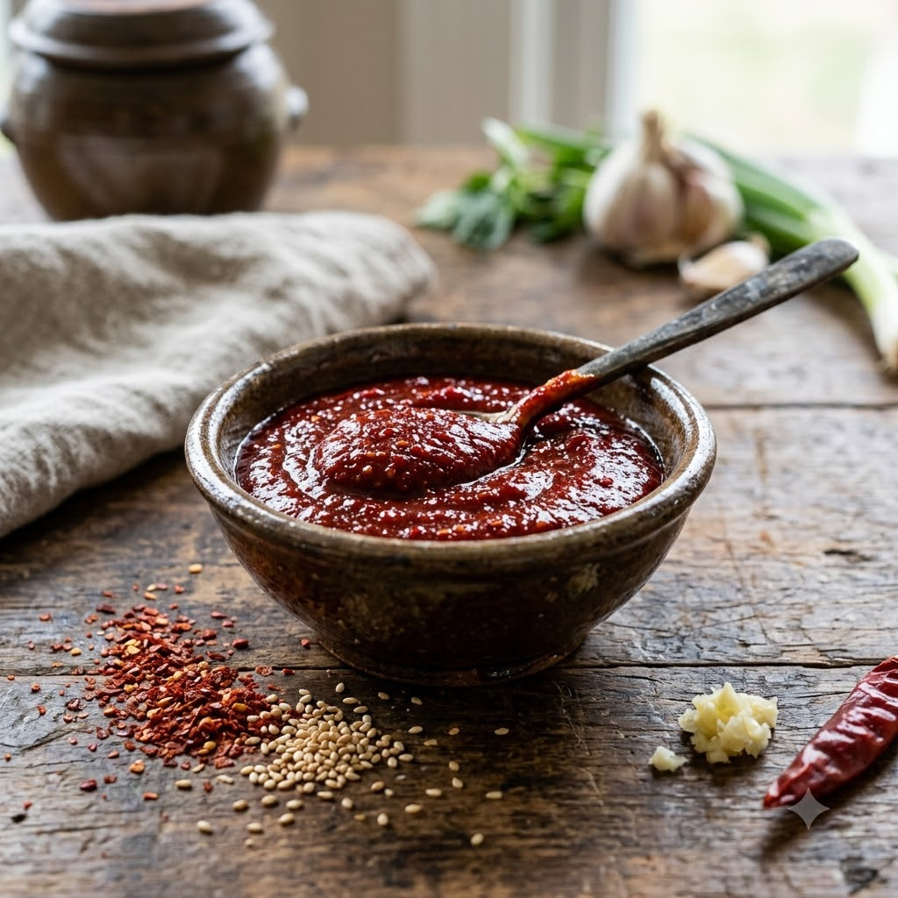

Gochujang Sauce

Gochujang Sauce
Chef Magic – Whisk/Blend 3 min — Makes ~3/4 cup
Vegetarian • Korean • Homemade
🧑🍳 Chef Magic
Ingredients
- 1/2 cup gochujang
- 2 tbsp soy sauce
- 2 tbsp sugar or honey
- 2 tbsp rice vinegar
- 1 tbsp sesame oil
- 2 cloves garlic, minced
- 1 tsp grated ginger
- 1 tbsp water (to loosen, if needed)
Method
1Add all the ingredients to the jar; select Whisk/Blend (Speed 4–6) and blend until smooth.
2Taste and adjust sweetness or tang as needed, adding a splash of water if a thinner sauce is preferred.
3Transfer to a clean jar and refrigerate for up to 3 weeks.
Tip: This is the workhorse sauce for Korean cooking in this book — use it as a glaze, a marinade base, or stirred into fried rice.